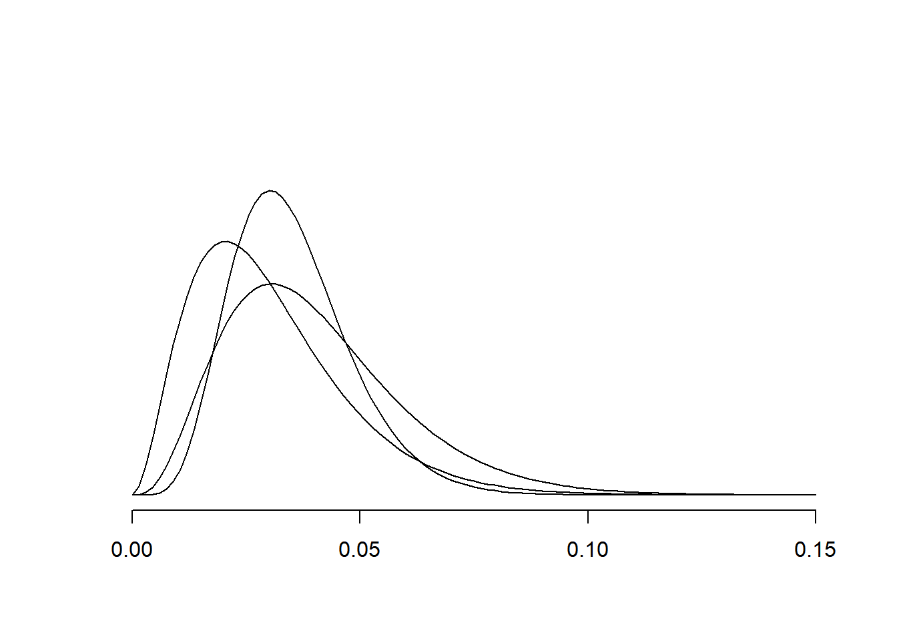

3 Famílias conjugadas
3.1 Família de distribuições conjugadas
3.2 Conjugada para a família exponencial
Famílias conjugadas são extremamente úteis tanto sob o ponto de vista algébrico quando computacional. Entretanto, note que a definição de família conjugada é ampla. Por exemplo, e sempre pertence à grande família de todas as distribuições de probabilidade, sendo esta a família conjugada trivial.
Famílias conjugadas não triviais são raras, existindo principalmente quando a distribuição condicional dos dados pertence á família exponencial.
Definição Considere que \(\Theta\) tem dimensão \(k\). Dizemos que \(X|\boldsymbol{\theta}\) pertence à família exponencial (natural) se \[f(x|\boldsymbol{\theta})=h(x)a(\boldsymbol{\theta})\exp\left\{\sum_{j=1}^k t_j(x)\theta_j\right\},\] onde \(\mathcal{X}\) não depende de \(\boldsymbol{\theta}\). Além disso, para a amostra (iid )\(X_1,\ldots,X_n|\boldsymbol{\theta}\), \[f(\boldsymbol{x}|\boldsymbol{\theta})=h(\boldsymbol{x})a(\boldsymbol{\theta})^n\exp\left\{\sum_{j=1}^k T_j\theta_j\right\},\] onde \(T_j=\sum_{i=1}^{n}t_j(x_i)\)
Se \(X|\boldsymbol{\theta}\) pertence à família exponencial, então \[f(\boldsymbol{\theta})=c(\boldsymbol{r},s)a(\boldsymbol{\theta})^s\exp\left\{\sum_{j=1}^k r_j\theta_j\right\}\] é uma conjugada (ver O’Hagan (2005) para a existência dessa distribuição). A será dada por \[f(\boldsymbol{\theta}|\boldsymbol{x})=c\left(\sum_{j=1}^k r_j+T_j,s+n\right)a(\boldsymbol{\theta})^{s+n}\exp\left\{\sum_{j=1}^k(r_j+T_j)\theta_j\right\}\]
Prova
\[\begin{align} f(\boldsymbol{\theta}|\boldsymbol{x})&\varpropto \underbrace{a(\boldsymbol{\theta})^ne^{\sum_{j=1}^kT_j\theta_k}}_{L(\boldsymbol{\theta})}\underbrace{a(\boldsymbol{\theta})^s e^{\sum_{j=1}^k r_j\theta_k}}_{f(\boldsymbol{\theta})}\\ &a(\boldsymbol{\theta})^{n+s}e^{(\sum_{j=1}^{k}T_j+r_j)\theta_j} \end{align}\]
Considere que \(\bm{\theta}\sim C(\bm{r},s)\) é a distribuição conjugada da verossimilhança. Isto implica em \(\bm{\theta}|\bm{x}\sim\hbox{C}(\bm{T}+\bm{r},s+n)\). Note que a atualiza a informação de \(s\) para \(s+n\) e de \(r_j\) para \(T_j+r_j\). Logo, se imaginarmos que a priori é um experimento hipotético, \(s\) seria o tamanho da amostra e \(\bm{r}\) seriam as estatísticas suficientes deste modelo.
3.3 Conflito entre fontes de informação
Considere que uma fábrica produz lotes de certos componentes eletrônicos. O setor de qualidade faz inspeções periódicas através de amostragem de 100 peças dentro de um lote. Todas as peças são testadas e o número de falhas registrado. As últimas inspeções mostram que em torno de 3% das peças são defeituosas.
Uma nova amostra será selecionada. Sendo \(X\) o número de peças defeituosas, uma verossimilhança adequada seria \[\theta^x(1-\theta)^{100-x}\]
Sabemos que o modelo Beta\((r,s)\) é conjugado para esta verossimilhança. Comparando a \[f(\theta)\varpropto \theta^{r-1}(1-\theta)^{s-1},\] com a verossimilhança, podemos interpretar \(r\) como o número de componentes defeituosos e \(s\)
Como temos as informações de vários lotes, podemos imaginar que um lote hipotético de tamanho $s=100$ foi selecionado e $r=3$ peças defeituosas foram encontradas.Note que, com estes valores, a exclui muitos valores do espaço paramétrico, uma vez que \[\sqrt{Var(\theta)}=0,0167\] Se a proporção amostral se manteve dentro dos 3% não há problemas com isso. Mas se ela aumentou (por causa de uma falha não detectada no processo), como essa escolha vai influenciar nossa análise?
Para entender os efeitos da sobre a , vamos analisar dois cenários.
- Cenário 1: Foram encontradas 4 componentes defeituosos
- Cenário 2: Foram encontrados 11 componentes defeituosos


Dizemos que há conflitos entre as fontes de informação quando a região de maior densidade da é pouco provável e tem baixa verossimilhança. Isso aconteceu com o cenário 2. O motivo para isso é que os dados geraram um valor atípico e a era muito informativa (baixo desvio padrão), não tendo massa longe do suficiente de \(E(\theta)\). Consideremos então a priori Beta(.3,9.7).
\[\begin{align}f(\mu,\phi|\boldsymbol{x})\propto f(x|\mu,\phi)f(\mu,\phi)\\ &\propto \phi^{\frac{n}{2}}e^{-\frac{\phi}{2}[ns^2 + n(\bar{x}-\mu)^2]}\times \phi^{\frac{1}{2}}e^{-\frac{\phi}{2C_0}(\mu-m_0)^2}\phi^{\frac{n_0}{2}-1}e^{-\frac{d_0}{2}\phi}\\ &= \phi^{\frac{1}{2}}e^{-\frac{\phi n}{2}(\bar{x}-\mu)^2 -\frac{\phi}{2C_0}(\mu-m_0)^2}\times \phi^{\frac{n+n_0}{2}-1}e^{-\frac{\phi}{2}\left(ns^2+d_0\right)} \end{align}\]
3.4 Prioris conjugadas fora da família exponencial
Famílias conjugadas fora da família exponencial são raras. Seja \(X_1,\ldots,X_n\) variáveis aleatória independentes com \(X_1|\phi,\psi\sim\hbox{Binomial Negativa}(\psi,\phi)\), onde \[f(x|\phi,\psi)=\frac{\Gamma(x+\psi)}{\Gamma(\psi)x!}\phi^\psi (1-\phi)^x,\] com \(\psi>0\), \(\phi\in(0,1)\) e \(x\in\mathbb{N}\). Se \(\psi\) é conhecido, então \[L(\boldsymbol{\theta})=\underbrace{\left[\frac{\prod_{i=1}^n\Gamma(x_i+\psi)}{\Gamma(\psi)^n\prod_{i=1}^n x_i!}\right]}_{h(\boldsymbol{x})}\underbrace{\phi^{n\psi}}_{a(\phi)}\exp\left\{ \underbrace{\sum_{i=1}^n x_i}_{t(\boldsymbol{x})} \underbrace{\log(1-\phi)}_{w(\phi)}\right\} \] Então, \[\begin{align} f(\phi|\psi)&=c(r,s)a(\phi)^s e^{rw(\phi)}\\ &=c(r,s)\phi^{s\psi}(1-\phi)^{r} \end{align}\] é uma conjugada. Da expressão acima segue que \(\phi|\psi \sim \hbox{Beta}(s\psi+1,r+1)\). A (condicional) por sua vez é dada por \[f(\phi|\boldsymbol{x},\psi)\varpropto \phi^{\psi(s+n)}(1-\phi)^{r+\sum_{i=1}^{n}x_i},\] onde ainda \(\phi|\psi,\boldsymbol{x}\sim\hbox{Beta}(\psi(s+n)+1,r+\sum_{i=1}^{n}x_i+1)\) Note que para fazer a inferência completa, ainda necessitamos de \(\psi|\boldsymbol{x}\), uma vez que \[f(\phi,\psi|\boldsymbol{x})=f(\phi|\psi,\boldsymbol{x})f(\psi|\boldsymbol{x})\] Outro método de obter a conjunta \((\phi,\psi|\boldsymbol{x})\), sem a necessidade de calcular \(\psi|\boldsymbol{x}\) será discutido na próxima aula.